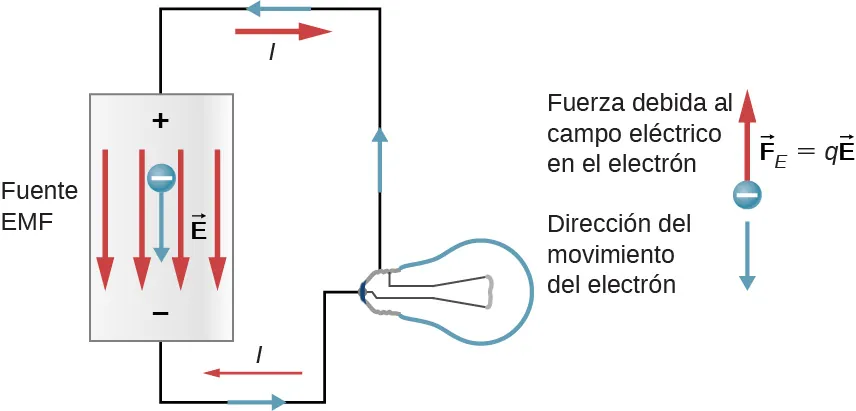
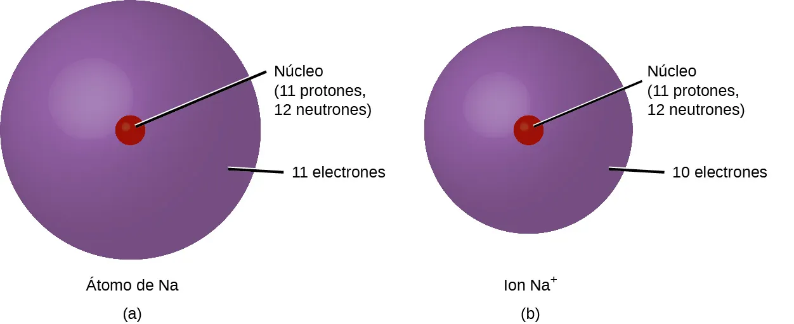
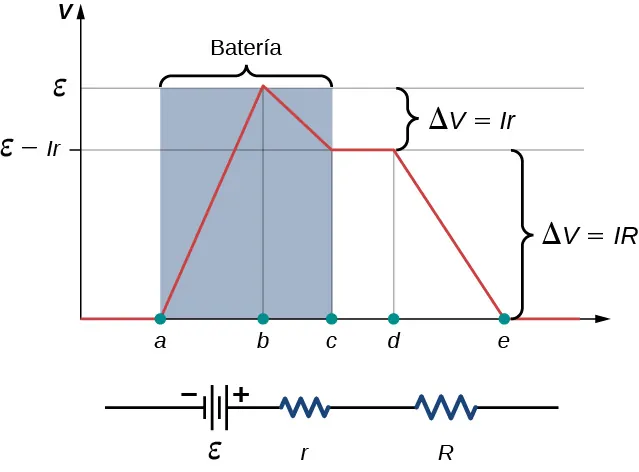

IES Valle del Alberche

📋 Enunciado
Partiendo de la definición de potencial eléctrico como trabajo por unidad de carga necesario para traer una carga de prueba desde el infinito (donde el potencial es cero por convenio) hasta un punto del espacio, y de la expresión del campo eléctrico creado por una carga puntual, demostrar que el potencial eléctrico creado por una carga \( Q \) a una distancia \( r \) viene dado por:


🎯 Objetivo
Obtener la expresión escalar del potencial eléctrico, que es una magnitud más sencilla de manejar que el campo vectorial. El potencial permite calcular trabajos y energías potenciales sin necesidad de integrales vectoriales, simplificando enormemente los problemas electrostáticos. Esta demostración conecta el concepto de trabajo con el campo eléctrico y establece las bases para el estudio de la energía en sistemas de cargas.


🔧 Procedimiento
donde \( r' \) es la variable de integración.

Evaluando los límites:
La carga de prueba se cancela, confirmando que el potencial es una propiedad del campo, independiente de la carga que se utilice para medirlo.
- Si \( Q > 0 \): el potencial es positivo y disminuye al alejarse de la carga
- Si \( Q < 0 \): el potencial es negativo y aumenta (se hace menos negativo) al alejarse
El potencial en el infinito es cero por convenio, lo que fija la referencia de energía.


✅ Resultado
El potencial eléctrico de una carga puntual es una magnitud escalar que depende inversamente de la distancia a la carga. Es positivo para cargas positivas y negativo para cargas negativas, y se anula en el infinito por convenio.

🧪 DESMITIFICANDO el Potencial Eléctrico de una Carga Puntual 🖱️ Pulsame
Una carga puntual de \( Q = -5{,}0\,\mu\text{C} \) está en el origen. Calcula el potencial eléctrico en un punto situado a \( 12\,\text{cm} \) de la carga.
El potencial eléctrico a una distancia de \( 0{,}50\,\text{m} \) de una carga puntual es de \( 1{,}8\times10^{4}\,\text{V} \). ¿Cuánto vale la carga? ¿Es positiva o negativa?
Dos cargas puntuales están sobre el eje \( x \): \( q_1 = +2{,}0\,\mu\text{C} \) en \( x = 0 \), y \( q_2 = -4{,}0\,\mu\text{C} \) en \( x = 8{,}0\,\text{cm} \). Calcula el potencial eléctrico total en el punto \( x = 4{,}0\,\text{cm} \).

Una carga \( q = +3{,}0\,\mu\text{C} \) se mueve desde un punto \( A \), donde el potencial es \( V_A = 200\,\text{V} \), hasta un punto \( B \), donde \( V_B = 800\,\text{V} \). Calcula el trabajo que debe realizar una fuerza externa para llevar la carga de \( A \) a \( B \) en equilibrio.
Dos cargas puntuales, \( q_1 = +6{,}0\,\mu\text{C} \) y \( q_2 = -2{,}0\,\mu\text{C} \), están separadas \( 15\,\text{cm} \). Calcula la energía potencial eléctrica del sistema.

Con un par de multiplicaciones y algo de práctica, esto es más fácil de lo que parece.
(Los detalles sobre lo que entra en las pruebas escritas se publicarán periódicamente en M.Teams).